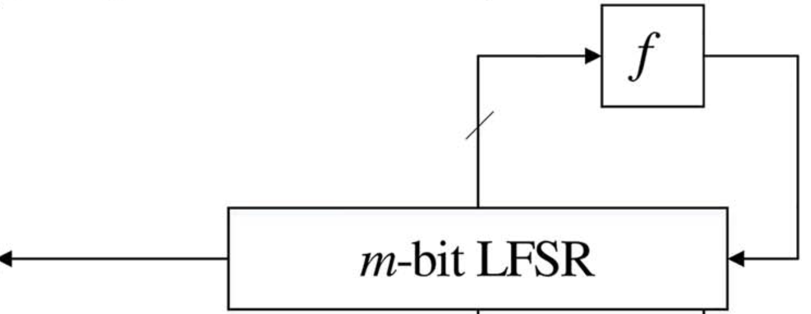

I am a Research Fellow at Nanyang Technological University (supervised by Prof. Jian Guo ). My research focuses on symmetric-key cryptography, particularly the design and cryptanalysis of stream ciphers, block ciphers, and hash functions.
Previously, I completed my PhD at University of Chinese Academy of Sciences (supervised by Prof. Dongdai Lin ), and my bachelor's degree at Shandong University. I am a recipient of CAS President Award, Zhu Li Yuehua Award.
Contact:
Email: shichang.wang@ntu.edu.sg
Office: SPMS-05-38, NTU
Research Interests

Design and analysis of ARX-based ciphers
ARX-based ciphers — are widely used due to their simplicity and efficiency, such as SHA-2 and ChaCha employed in the real world. In ARX ciphers, their update function involves (only) three operations: (A) modular addition, (R) rotation with fixed rotation amounts, and (X) XOR. There are lots of famous ARX designs, for example, MD4/5, SHA-1/2, BLAKE, ChaCha, Speck, LEA et al. As far, many cryptanalysis methods are developed for ARX ciphers, with meet-in-the-middle, differential-linear attacks standing out as the most significant and powerful methods of the cryptanalysis.

Design and analysis of Sbox-based ciphers
From DES to AES, S-boxes have played an important role in the design of symmetric-key ciphers. Modern S-box-based ciphers commonly employ iterative structures such as Feistel networks and substitution-permutation networks (SPNs), and Sponge constructions. Differential and linear cryptanalysis remain two fundamental approaches to analyzing these constructions, together with their numerous generalizations and combinations, including truncated differential, impossible differential, nonlinear, and differential-linear attacks.

Analysis of (L)FSR-based ciphers
Linear feedback shift registers (LFSRs) and feedback shift registers (FSRs) have long played a fundamental role in the design of stream ciphers due to their simple structure, efficient implementation, and desirable statistical properties. Various constructions have been developed based on (L)FSRs, including nonlinear filtering, nonlinear combination, and irregular clocking. Their security has been extensively studied through correlation attacks, algebraic attacks, and related techniques. In particular, fast correlation attacks exploit statistical dependencies between the keystream and the underlying LFSR sequences.
Manuscripts
An Efficient Tree-Structure Hash: QuantaSylva Hash (QSH)
For more details and on-going researches, see Research Projects.
Professional Activities:
- program committee member
Inscrypt 2026
- community services
general co-chairs of FSE 2026, and organizers of IACR spring school on symmetric cryptography (SoSC 2026)
- subreviewer for conferences
Eurocrypt 2027, ASIACRYPT 2026, Eurocrypt 2026, ASIACRYPT 2025, CRYPTO 2025, Inscrypt 2024, CRYPTO 2024, ASIACRYPT 2023, ICICS 2023, ASIACRYPT 2022, Inscrypt 2022
- reviewer for journals
IEEE Transactions on Information Theory, Discrete Applied Mathematics, Chinese Journal of Electronics